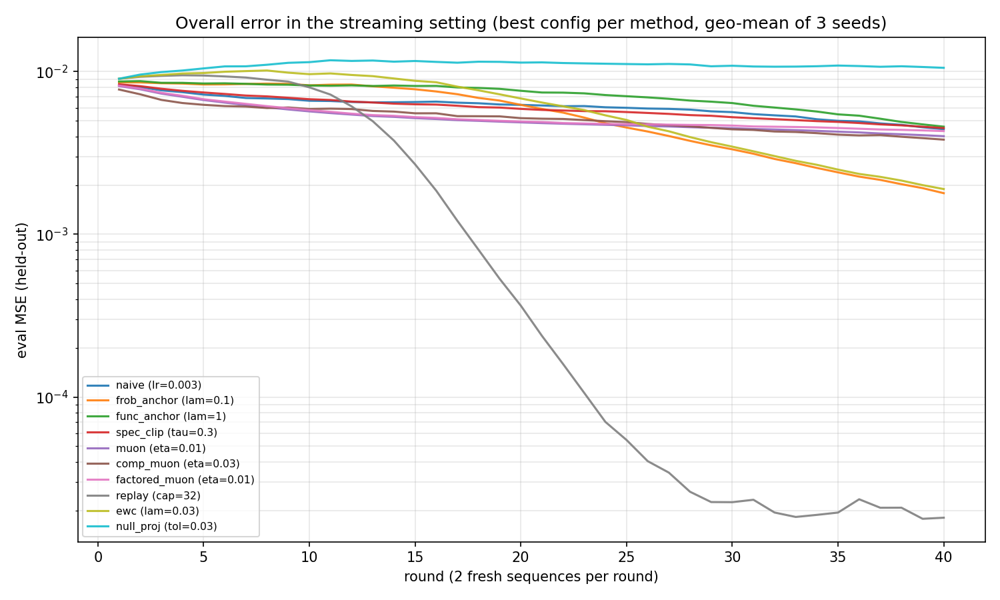
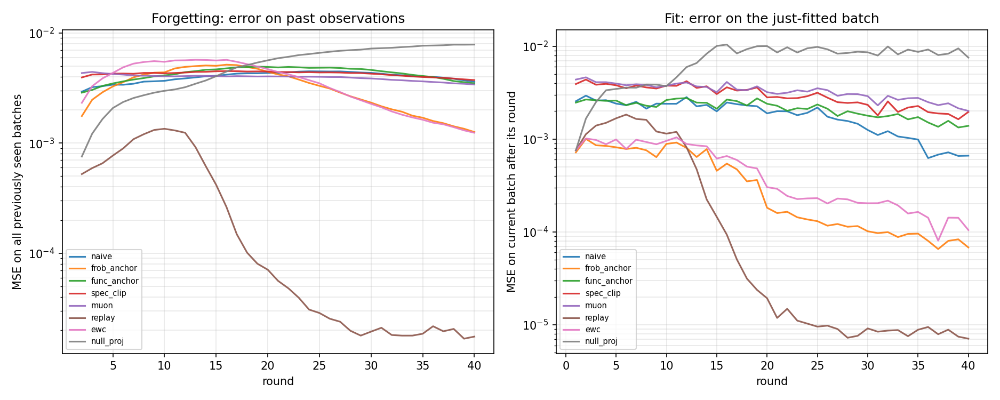
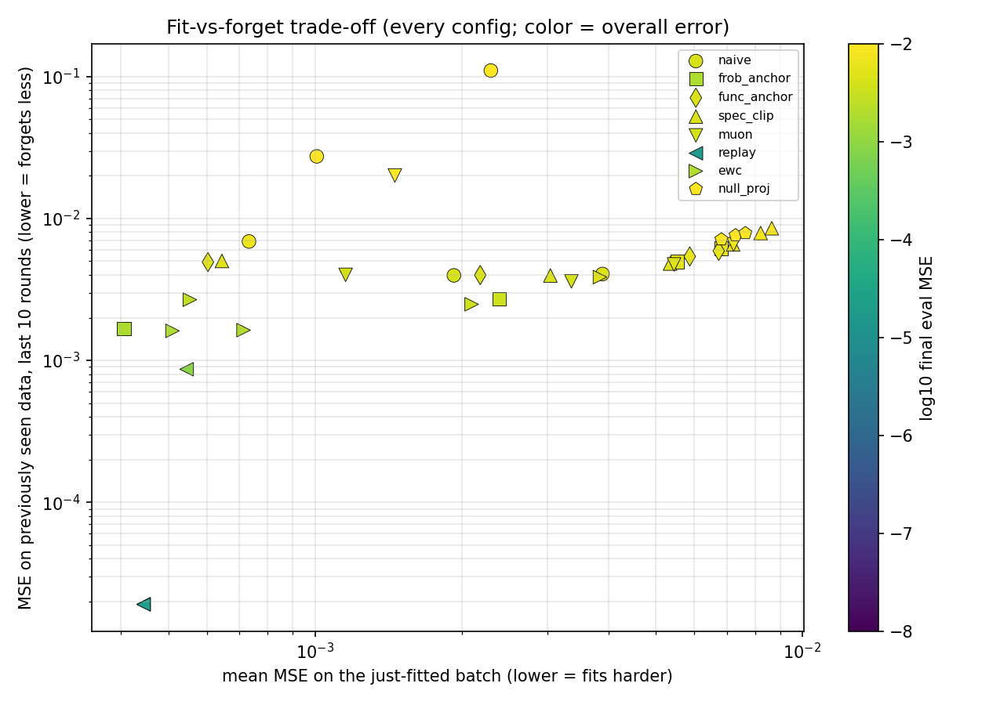
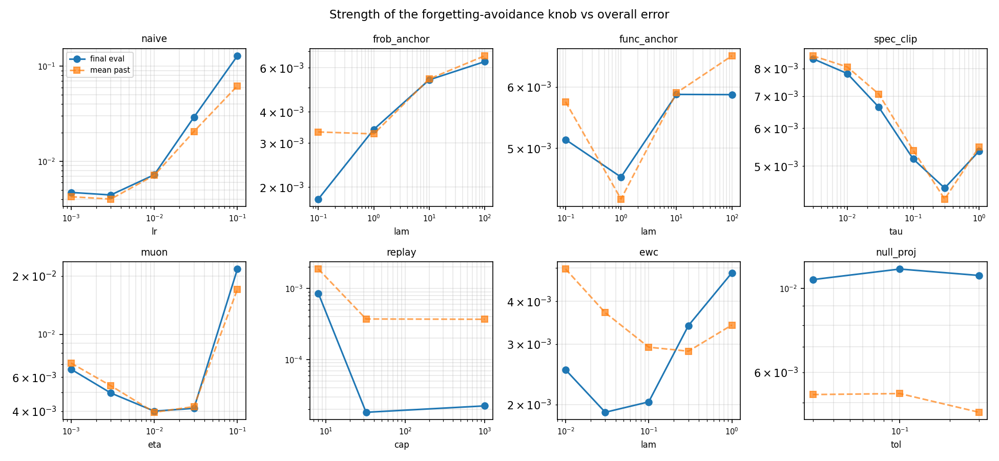
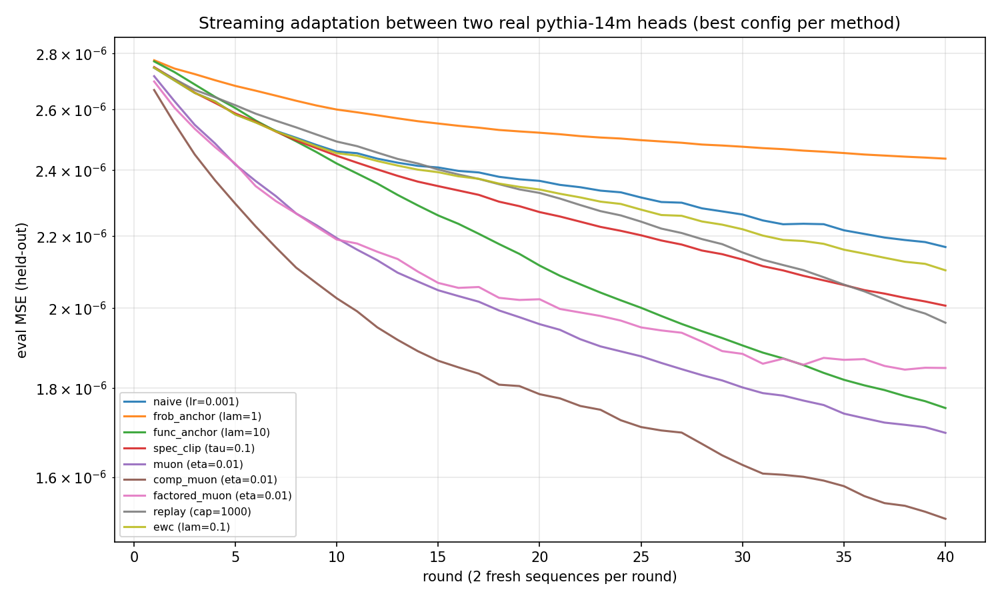

Muon's "spectral descent" heuristic, read as forgetting control: fit the batch in front of you while
limiting how much the function can change on every possible input — the worst-case source.
We make that analogy exact for single-layer linear attention, then prototype ten ways of avoiding
forgetting in a streaming student/teacher setting where only 2 sequences arrive per round — including
Tilde Research's compositional Muon,
which extends the per-matrix budget to the whole layer's composition — and study how the strength of
each technique trades off against overall error.
Lab: forgetting_lab.py (135 runs, 5.9 s wall-clock in parallel; median run 0.23 s).
Companion to the orthogonality-exploiting updates report.
The title nods to Li & Hoiem's method of the same name, which appears here as func_anchor.
Same teacher as the main report (D=32, N=8, weights orthogonal), but data now arrives as a stream: each of 40 rounds delivers B=2 fresh sequences, and the student runs K=20 Adam steps on just that batch before the next one arrives. The student is parameterized by the identifiable quantities (A = WqWkT, Wv) — the map outn = Σm≤n (xnTA xm) xmTWv is bilinear in them.
A round provides B·N·D = 512 equations against 2D² = 2048 parameters: every per-round fit is underdetermined 4x, so driving the batch loss down moves the function arbitrarily off-batch. That is forgetting, and it is severe: naive fitting at lr 0.1 reaches 2.3e-3 on each batch while held-out error climbs to 1.3e-1 — 15x worse than the random init (8.7e-3). Metrics per round: held-out eval MSE (overall error, the headline), MSE on all previously seen batches (forgetting), and MSE on the just-fitted batch (fit).
Changing the weights by (ΔA, ΔWv) changes the output on an input sequence with orthonormal rows by
At orthogonal-scale parameters (‖A‖₂ ≈ ‖Wv‖₂ ≈ 1) this is just
‖Δout‖ ≲ ‖ΔA‖₂ + ‖ΔWv‖₂: the spectral norms of the parameter changes bound the
function change on every possible source. This is the extension of the matmul intuition
(‖(W+ΔW)x − Wx‖ ≤ ‖ΔW‖₂ for ‖x‖≤1) to the bilinear attention map. --verify confirms it:
sup over 2000 random sequences 0.072 ≤ bound 0.124, never violated.
Frobenius norms play the complementary role: the average output change over random inputs is governed by ‖Δ‖F, not ‖Δ‖₂. A rank-1 ΔA and an isotropic ΔA with the SAME Frobenius norm (0.1) produce worst-case output changes of 0.100 vs 0.015 — a 6.5x gap tracking their spectral norms (0.10 vs 0.019, ~√D apart). Equal average-case forgetting budgets can hide very different worst cases.
This gives a clean two-column dictionary, and Muon sits in the right column:
| average-case forgetting (random sources) | worst-case forgetting (every source) | |
|---|---|---|
| budget | ‖Δθ‖F (Frobenius ball) | ‖Δθ‖₂ (spectral ball) |
| steepest descent per unit budget | gradient descent (−G) | Muon: −msign(G), where msign(G) = argmax‖Δ‖₂≤1⟨G,Δ⟩ |
| trust region / projection | frob_anchor (proximal ‖θ−θ₀‖²F) | spec_clip (clip singular values of the round update) |
| curvature-weighted refinement | EWC: weight directions by how much PAST DATA actually cares (Fisher) — between the geometric budgets and memory | |
| compositional extension | Compositional Muon (Tilde Research): when the layer is only accessible through its factors (Wq, Wk), per-matrix spectral budgets charge the wrong quantity — the forgetting bound charges ‖Δ(WqWkT)‖₂, the COMPOSED change. Partner-whitening (msign(G·C−1)·C−1 with C the partner's damped Gram root) bounds the per-step composed change by η, nearly tightly — whole-layer worst-case forgetting control from factor access alone (Finding 3). | |
One subtlety, measured: msign of a small momentum still has unit spectral norm, so per-round Muon spends its FULL worst-case budget K·η every round whether it needs it or not (the realized ‖Δ‖₂ saturates the bound exactly) — it cannot converge, only orbit at a floor set by η. Same structural property as the muon_polar floor in the main report.
| method | per-round update (K=20 inner Adam steps unless noted) | family |
|---|---|---|
| naive | unconstrained fit of the current batch (lr swept) | baseline |
| frob_anchor | + λ‖θ − θround start‖²F | average-case trust region |
| spec_clip | unconstrained fit, then round delta projected onto {‖Δ‖₂ ≤ τ} per matrix | worst-case trust region |
| muon | θ ← θ − η·msign(momentum), K steps; total ‖Δ‖₂ ≤ K·η (applied to A directly) | worst-case steepest descent |
| comp_muon | Tilde's compositional Muon on the factored pair (Wq, Wk): ΔWq = −(η/2)·msign(MqCk−1)Ck−1, Ck = (WkTWk + λI)1/2 (and symmetrically for Wk); bounds the COMPOSED ‖Δ(WqWkT)‖₂ ≤ η per step | worst-case, whole layer jointly |
| factored_muon | naive per-factor msign on (Wq, Wk) with the same η/2 budgets — the ablation that ignores composition | worst-case, per factor |
| func_anchor | + λ‖f(Xt; θ) − f(Xt; θround start)‖² (LwF-style self-distillation) | function-space trust region |
| ewc | + λ·Σ F⊙(θ − anchor)², F = accumulated Gauss-Newton/Fisher diagonal | curvature-weighted anchor |
| replay | fit current batch + 8 sequences sampled from a reservoir buffer (cap swept) | memory |
| null_proj | per-step updates projected off the span of past-batch feature rows (GPM-style) | memory (subspace) |
Implementation notes that mattered (caught by adversarial review before the final sweep): the textbook EWC Fisher proxy — squared batch-mean gradient of an already-fitted batch — is residual-scale, ~6 orders of magnitude below the Gauss-Newton diagonal here, and made the penalty inert; the GN diagonal (free, since the model is linear per block) Pareto-dominates it. And msign needs rank-aware null-space handling: batch gradients have rank ≤ B·N = 16 of 32, and a polar map with an absolute eigenvalue clamp turns the null space into unit-norm noise — that variant diverged at every step size. The two factored Muons start from a deliberately unbalanced factorization (Wq = A₀D−1, Wk = D, condition 10 — function-identical to every other method's init), with Gram damping λ = 1e-2 per Tilde's default.
| method | best knob | final eval MSE | forgetting (past MSE, last 10 rounds) | fit (mean batch MSE) |
|---|---|---|---|---|
| replay | cap 32 | 1.8e-5 | 1.9e-5 | 4.5e-4 |
| frob_anchor | λ 0.1 | 1.8e-3 | 1.7e-3 | 4.1e-4 |
| ewc (GN Fisher) | λ 0.03 | 1.9e-3 | 1.6e-3 | 5.1e-4 |
| comp_muon (Tilde) | η 0.03 | 3.8e-3 | 3.6e-3 | 1.1e-3 |
| muon | η 0.01 | 4.0e-3 | 3.6e-3 | 3.4e-3 |
| factored_muon | η 0.01 | 4.3e-3 | 3.8e-3 | 3.2e-3 |
| naive | lr 0.003 | 4.4e-3 | 4.0e-3 | 1.9e-3 |
| spec_clip | τ 0.3 | 4.5e-3 | 4.0e-3 | 3.0e-3 |
| func_anchor | λ 1 | 4.6e-3 | 4.0e-3 | 2.2e-3 |
| null_proj | tol 0.03 | 1.1e-2 | 7.6e-3 | 7.3e-3 |
Geometric mean over 3 seeds; identical inits, data streams, and eval set across all methods and
knob values; init eval loss 8.7e-3. Full per-config tables: forgetting_results.json.


Every geometric constraint — spectral or Frobenius, parameter- or function-space — at best improves on tuned naive fitting ~2.5x (4.4e-3 → 1.8e-3). A 32-sequence replay buffer reaches 1.8e-5, and takes off around round 10, once the buffer accumulates enough sequences to make the joint system identifiable — from then on each round refines a well-posed problem instead of sliding around an underdetermined one. Even a tiny 8-sequence buffer (8.6e-4) beats every non-memory method, and cap 32 matches keep-everything (2.2e-5). Constraints can only LIMIT the damage of an underdetermined fit; memory makes the fit well-posed. The trade-off scatter shows this as replay breaking off the frontier: it fits hard AND forgets least.

The spectral family does work as advertised — the bound is real and the runs never violate it — but on overall error muon (4.0e-3) and spec_clip (4.5e-3) only match tuned naive (4.4e-3), while the average-case Frobenius anchor (1.8e-3) and the Fisher-weighted EWC (1.9e-3) clearly win. The reason is the gap the rank-1 demo quantifies: worst-case protection spends its budget guarding against sources that almost never arrive. The forgetting that actually materializes on stored past batches is an average over random orthonormal-row inputs, governed by Frobenius geometry. EWC — conceptually a step from geometry toward memory, since the Fisher weights directions by how much past data actually cares — ties the plain Frobenius anchor here (per-seed finals fully overlap) rather than beating it: with isotropically random sources the data-weighted metric is itself nearly isotropic, so there is little for the weighting to exploit. Muon's "fit the batch per unit of worst-case forgetting" heuristic is the right shape of idea but guards the wrong norm for this source distribution.
Tilde Research's compositional Muon extends the forgetting reading from one matrix to the whole layer. In a transformer you don't get to update A = WqWkT directly — you update the factors, and the layer's forgetting bound charges the composed change ‖ΔA‖₂, not the factor changes. Their partner-whitened half-split rule (ΔWq = −(η/2)·msign(GqCk−1)Ck−1 with Ck the partner's damped Gram root) is exactly steepest descent under a spectral budget on the composed update, split half per factor. We test it from a deliberately unbalanced factorization (Wq = A₀D−1, Wk = D, condition 10 — same function as every other init; trained transformers have unbalanced factor spectra, which is the regime the method targets):
--verify check 6).It does not change the macro conclusion — comp_muon still guards the worst case, so frob/EWC/replay still beat it under random sources (Finding 2) — but within the spectral family it is the right way to spend the budget: jointly, on the composition the function actually sees.
Sweeping each method's strength traces a U: too weak reverts to naive forgetting (or worse — naive at lr 0.1 is the catastrophic end), too strong stops learning (spec_clip at τ=0.003 barely moves from init, 8.4e-3). Best settings sit at intermediate strength: τ=0.3 for spectral clipping (per-round worst-case output budget ≈ 0.6 against typical teacher output norms of ~0.3 — the budget that wins is about 2x the signal), Muon budget K·η = 0.2/round, λ=0.1 for the Frobenius anchor, λ=0.03 for EWC. The one exception is null_proj, whose knob is essentially inert — see Finding 5.

null_proj (GPM-style) projects every update off the feature directions of past batches — exact, verified-to-1e-15 protection per block. It is also the worst method in the study (1.1e-2, above the init loss). The failure is structural, not a tuning problem: each round contributes 16 fresh constraint directions to Wv's 32-dim space and 72 to A's 1024-dim space, so the protected subspace saturates by round ~3 (Wv) and ~14 (A). After that the method must either freeze (no capacity left to both protect and learn) or silently drop constraints — and its knob barely changes anything (1.05–1.12e-2 across the grid). Exact subspace protection is a fixed-capacity budget; a stream spends it in a few rounds. Soft, energy-weighted protection (EWC) or raw memory (replay) degrade gracefully instead.
The forgetting reading of Muon survives contact with the experiment in its logic but not in its norm: spectral control is exactly the right quantity to bound worst-case interference, and if sources were adversarial — or the data distribution shifted so that "rare" directions mattered — the spectral family is the only one with a guarantee. For i.i.d. random sources, though, guarding the worst case is ~√D too conservative per unit of learning, and the methods that model where past knowledge actually lives (Fisher weighting, replay) dominate. A practical reading for larger models: Muon-style updates are a forgetting-robustness prior you get for free from the optimizer — and compositional Muon (Finding 3) is how to spend that prior on the quantity a layer actually exposes to the loss — but they are not a substitute for memory when data is scarce and non-repeating.
make_problem(42)), the same per-seed init and data stream, and the same held-out eval set
(128 sequences). Selection by geometric-mean final eval over seeds.ProcessPoolExecutor, one torch thread per worker). Median run 0.23 s, warm maximum
0.62 s — every individual run within the <1 s budget (the absolute max of ~2–3 s
is first-task-per-worker torch warmup, not run cost).--verify checks before any sweep: forward equivalence of the (A, Wv)
parameterization (2e-16), the spectral bound on 2000 random sequences, the rank-1 vs isotropic
worst-case gap (with an aligned input that attains the sup), null-space projector exactness (1e-15),
the underdetermination count, and the composed-budget check for the factored Muons
(comp_muon realizes 0.199 of a 0.200 budget; naive factored realizes 0.470).Everything above used random orthogonal teachers. This section reruns the experiment on real pre-trained attention circuits: the teacher is head 0 of layer 1 of EleutherAI/pythia-14m (A* = WQWKT/√dh, the QK circuit, and Wv* = WVWO, the full OV circuit — both 128×128 of rank 32), and the student is initialized from a different real head (layer 4, head 2), so the streaming task reads: adapt one pre-trained head toward another head's function without forgetting. The weights are transplanted into the linear-attention lab (no softmax, no rotary — we study the weight geometry, not pythia's function), and both circuits are normalized by the teacher's spectral norms — a units choice that preserves rank, spectrum shapes, factor imbalance, and the student/teacher relative scale. The factored Muons get the student head's real tall factors (128×32): conditions 68 and 28, mutually unbalanced by 4.9x — no synthetic gauge needed; this is the regime compositional Muon targets. Each round is now 16x underdetermined (2048 equations vs 32768 parameters; was 4x), and the inner Adam lr is 1e-3 (circuit entries are ~8x smaller than the random lab's at matched spectral norm).
| method | best knob | final eval MSE | forgetting (past MSE, last 10 rounds) | fit (mean batch MSE) |
|---|---|---|---|---|
| comp_muon (Tilde) | η 0.01 | 1.51e-6 | 9.8e-7 | 4.7e-7 |
| muon | η 0.01 | 1.70e-6 | 1.3e-6 | 4.3e-7 |
| func_anchor | λ 10 | 1.75e-6 | 1.6e-6 | 1.8e-6 |
| factored_muon | η 0.01 | 1.85e-6 | 1.2e-6 | 5.9e-7 |
| replay | cap 1000 (all) | 1.96e-6 | 3.6e-7 | 6.5e-7 |
| spec_clip | τ 0.1 | 2.01e-6 | 1.2e-6 | 1.1e-6 |
| ewc | λ 0.1 | 2.10e-6 | 9.3e-7 | 3.6e-7 |
| naive | lr 0.001 | 2.17e-6 | 1.1e-6 | 3.5e-7 |
| frob_anchor | λ 1 | 2.44e-6 | 1.6e-6 | 1.6e-6 |
Init eval loss 2.82e-6; geometric mean over 3 data-stream seeds (the pre-trained weights are fixed — "that particular value"). null_proj is omitted: its basis operations scale with D² = 16384 and break the <1s budget, and it was the structural loser at D=32. 126 runs, 8.5 s wall-clock on 16 workers, median run 0.56 s (the eigh-heavy Muon family runs over budget at D=128: comp/factored ~1.2–1.3 s, muon-on-A ~1.8 s).

--verify check 4), and the whitened rule
now beats even white-box msign on A — the factored rank-32 parameterization matches the teacher's
rank-32 circuit class, and the partner-whitening is what converts that into better error
(factored_muon shares the parameterization and still loses).uv run forgetting_lab.py --verify # bound + projector + parameterization + composed-budget checks
uv run forgetting_lab.py --smoke # one run per method, serial
uv run forgetting_lab.py # full 135-run sweep, parallel (~6 s on 16 cores)
uv run forgetting_pretrained.py --verify # pythia-14m circuit spectra + composed-budget checks
uv run forgetting_pretrained.py # section-7 sweep on real circuits (126 runs, ~9 s)
Artifacts: forgetting_eval_curves.png, forgetting_dynamics.png,
forgetting_strength.png, forgetting_tradeoff.png,
forgetting_results.json; pre-trained variant:
forgetting_pretrained_curves.png, forgetting_pretrained_strength.png,
forgetting_pretrained_results.json, pythia_circuits.pt (cached circuits).